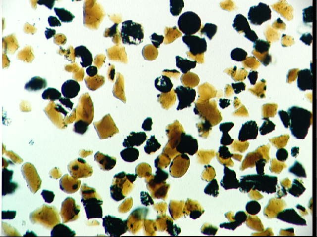
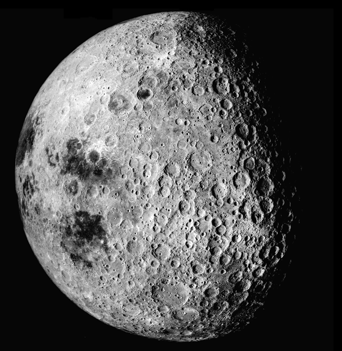
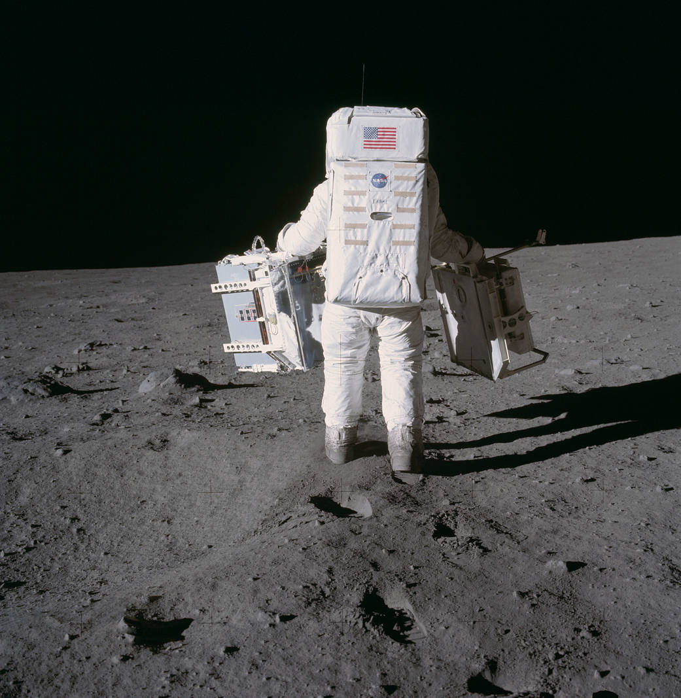

月球筆記 02
到了月球，
再回頭看地球。
 從月球出發，研究地球的過去與更遠的宇宙。
從月球出發，研究地球的過去與更遠的宇宙。月球表面幾乎沒有空氣，也沒有流動的海洋。看起來荒涼的地方，卻可能留下地球早已失去的線索。
月壤中的氣體可能留有地球大氣的線索；月球背面能遮蔽部分地球無線電干擾，提供觀測早期宇宙的機會。
從一粒月壤開始 →一粒土裡的來客
月球的土裡，
怎麼會有地球的線索？
月面覆蓋著岩屑和細塵，合稱月壤。放大照片可見顆粒外觀；機制示意圖呈現太空粒子如何留在其中。

放大查看照片 ↗太陽向外噴出的帶電粒子流叫太陽風。當粒子撞上月面，氦、氖這類不易與其他物質反應的氣體，就可能留在月壤中。
科學家分析氣體種類與同位素比例來追查來歷；同位素是同一元素中，原子核中子數不同的原子。圖不按比例。
嫦娥六號惰性氣體研究 ↗ 地球大氣粒子研究 ↗粒子抵達之前
地球的磁場，
也會改變月面的環境。
月球繞地球運行時，會經過不同的粒子環境。抵達月面的太陽風，並非一路都暢行無阻。
深藍色區域是磁層，也就是地球磁場主導粒子運動的範圍；向背離太陽方向延伸的部分叫磁尾。
淡褐色的外圍帶是磁鞘：太陽風通過弓形震波後，在這裡減速、改變方向。月球進出這些區域時，接收到的粒子環境也跟著改變。
月球正反兩面都可能在磁層內受遮蔽，不是背面永遠承受高速太陽風。
月壤比較研究與機制圖 ↗把線索保存下來
地球的過去，
為什麼要到月球找？
地球的表面一直在變。岩石被風化、搬運，也可能隨板塊活動重新進入地底；很多早期紀錄就這樣被改寫。
流水、侵蝕與地質活動，讓古老材料難以原樣留下。
月球沒有雨水與河流侵蝕，部分古老岩屑因此能保留較久。
逐步加熱月壤時，嫦娥六號樣本中來自太陽風的氙（一種惰性氣體）主要在高溫釋出；正面樣本則可見低溫、高溫兩段特徵。
研究團隊把差異解讀為背面粒子植入更深，並提出：地球周圍的粒子環境，使正面收到較多減速的太陽風。這是由實測提出的解釋，不是直接讀出完整的古地球磁場。
加熱是實驗室分析，不是說月面本來更熱。月壤仍會受撞擊翻攪、氣體流失；追查更久的地球歷史，還需要保存與年代合適的材料。
2026 年月壤比較研究 ↗ 2025 年大氣輸送模型 ↗NASA 月表環境 ↗研究機構：實測與解釋 ↗從腳下，轉向天空
在月球背面，
地球的訊號變弱了。
月球自轉一圈和繞地球一圈所需時間相同，所以大致以同一面朝向地球，稱為同步自轉。照片是太空人從軌道拍到的背面；切到示意圖，看看它如何遮擋地球訊號。

放大查看照片 ↗地球上的廣播與通訊設備會發出無線電波。這種能在真空中傳播的電磁波，也可能蓋過儀器想接收的微弱宇宙訊號。
接收宇宙無線電波的儀器叫射電望遠鏡，聽到的不是聲音。圖只表示位置與遮蔽關係，不代表實際訊號強度。
月球低頻射電觀測研究 ↗來自恆星出現以前
那些微弱訊號，
能讓我們看見多早的宇宙？
第一批恆星出現前，宇宙中已有中性氫，也就是還保有電子的氫原子。它們發出的特定訊號，能幫助研究那個還沒有星光的時代。
地球高空有含帶電粒子的電離層，會妨礙部分低頻訊號抵達地面。月球沒有地球那樣的電離層，背面又能避開許多地球干擾，因此成為這類觀測的候選地點。
NASA 早期宇宙觀測構想 ↗ 低頻觀測的限制 ↗把想法放上月面
一片天線，
一起接收遠方的訊號。
要接收這些微弱訊號，科學家提出 FarView 構想：不是放上一支大望遠鏡，而是讓大量小天線共同觀測。
這項方案設想在約 200 平方公里布設約 10 萬支天線，還研究能否從月壤提取材料，在當地製作，減少從地球運送的負擔。
FarView 仍是研究構想，尚未建成。月背也並非完全安靜，太陽與附近設備等干擾，仍是設計時要處理的問題。
NASA FarView 概念研究 ↗讓儀器一起工作
到了月球，
鐘也得重新對準。
天線收到訊號後，還要記下抵達的時間。當設備需要與地球協作，我們不能直接假定兩邊的鐘永遠走得一樣快。
原子鐘靠原子的穩定振動計時。美國國家標準與技術研究院估算，月表鐘相對地表每天約快 56 微秒；一微秒是一秒的百萬分之一。拖動天數，看看差距怎麼累積。
兩地的引力與運動環境不同，會影響計時。為了精密導航與觀測，NASA 正協調月球時間基準；LTE440 這類已發表的工具，則用來換算月球與地球的時間。
圖以每天 56 μs 固定累積；μs 是微秒，ms 是毫秒。真實換算需考慮位置、運動與時間尺度，月球時間標準也尚未全球定案。
NIST 時鐘估算 ↗ NASA 月球時間 ↗ LTE440 論文 ↗再看一次熟悉的月亮
同一顆月亮，
多了幾種認識它的方式。

放大查看照片 ↗月壤中的氣體，讓我們追問地球曾經是什麼樣子；背向地球的一側，提供了觀測早期宇宙的機會。而當儀器真正搬過去，連如何對時，都成了需要解決的問題。
月球離我們很近，環境卻很不一樣。正是這些差異，讓它既是研究的對象，也可能成為人類研究其他世界的地方。
Apollo 11 實拍來源 ↗